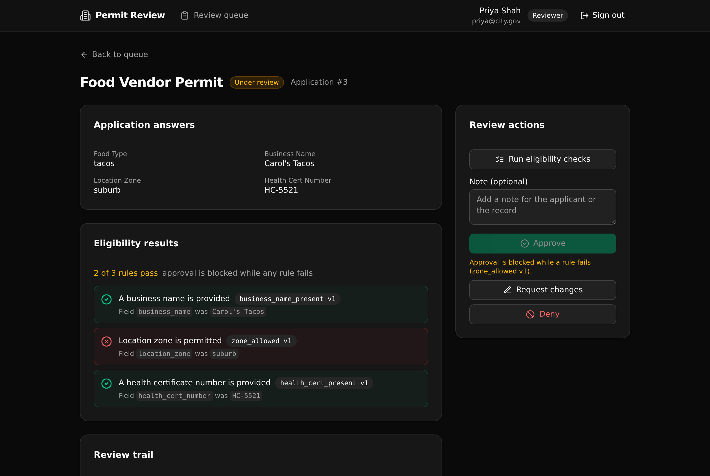

The governed backend under a public permit intake tool. Completeness, versioned eligibility rules, and review routing all live in one Xano API layer, so a fast-built government frontend stays production safe.
The eligibility results show the exact rule and version that fired. Approve is blocked while any active rule fails, and the block names the rule. The same engine that shows these results is the code that gates the decision.

An AI frontend builder makes a permit form in minutes. The risk is that the form, not a governed backend, becomes the rulebook. This template moves the rules into one versioned API layer a technical evaluator can read and trust.
Twelve endpoints across five groups. Each one enforces a rule.
| Method | Path | What it enforces |
|---|---|---|
| POST | /api:permit_auth/signup | Self-serve registration. Role is forced to applicant. |
| POST | /api:permit_auth/login | Verify credentials, mint a token. |
| GET | /api:permit_auth/me | The current user and role. |
| GET | /api:permit_catalog/permit-types | Active permit types and their required fields. |
| POST | /api:permit_apps/save | Create or update a draft. Own-record and active-type guards. |
| POST | /api:permit_apps/submit | Completeness check. Blocks and names the missing fields. |
| GET | /api:permit_apps/mine | The caller's own applications. |
| GET | /api:permit_apps/get/{id} | One application with rules and the full trail. Applicant sees only their own. |
| POST | /api:permit_review/run-checks | Reviewer or admin. Evaluate active rules, record results, move to under review. |
| POST | /api:permit_review/decide | Reviewer or admin. Approve is refused while any active rule fails. |
| GET | /api:permit_review/queue | Reviewer or admin. Applications by status. |
| POST | /api:permit_seed/run | Idempotent demo seed. |
Pick a seeded account or register as an applicant, then load the demo data with one click.
Choose a permit type and fill the required fields. An incomplete submit shows exactly what is missing.
The applicant's own list with status and requested changes.
Filtered by status, reviewer only. The API rejects it for an applicant no matter what the UI renders.
The answers, the eligibility results with the rule key and version, the audit trail, and the review actions.
Clone it and deploy to your own Xano account in about a minute. You need a free Xano account for the one-time login.
git clone https://github.com/xano-scratch/permit-review-workflow.git cd permit-review-workflow npm install npx xanots login npm run xano:deploy
Or hand this prompt to your coding agent:
Clone https://github.com/xano-scratch/permit-review-workflow and deploy it to my Xano account: run npm install, then npx xanots login, then npm run xano:deploy. Then help me adapt the permit types and the versioned eligibility rules in xano/ to my own program.
The build's live environment is an ephemeral Xano tenant and may have expired. The durable artifact is this repo. Anyone can redeploy it with npm run xano:deploy for fresh links, seeded and ready.